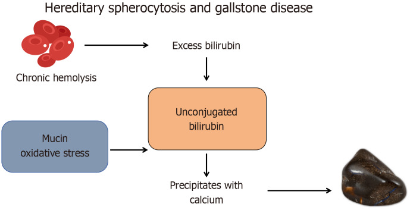
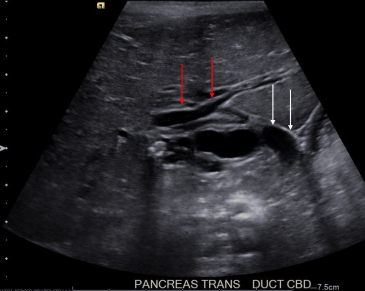
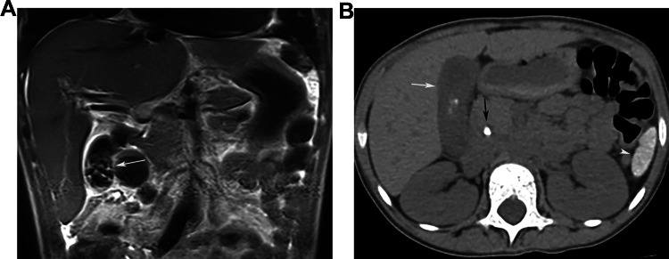

6154 — Sỏi mật ở trẻ có bệnh tan máu: cắt túi mật dự phòng cùng lúc cắt lách hay chờ? / Gallstones in children with hemolytic disease: prophylactic cholecystectomy at splenectomy or watchful waiting?
Tags: pattern:soi-sac-to pattern:soi-tui-mat pattern:soi-ong-mat-chu pattern:bun-mat vung:tui-mat vung:ong-mat vung:o-bung score:ASGE-2019 score:Baylor-2016 protocol:sieu-am-bung protocol:MRCP protocol:ERCP protocol:cat-tui-mat-noi-soi incidentaloma:soi-tui-mat
Mức chắc chắn (certainty): tổng hợp y văn (literature synthesis) — ghép 1 đoàn hệ 87 ca cắt lách (BMC Surg 2025, PMC12335159, CC BY), 1 đoàn hệ 13 trẻ HS (BMC Pediatr 2026, PMC13693155, CC BY-NC-ND — chỉ dùng số liệu), 1 tổng quan cơ chế HS–sỏi (World J Gastrointest Surg 2025, PMC12308567, CC BY-NC), 1 phân tích cơ sở dữ liệu 1.124 lần ERCP nhi (Front Pediatr 2025, PMC12011750, CC BY), 1 nghiên cứu danh pháp ống mật chủ (J Indian Assoc Pediatr Surg 2026, PMC13061501, CC BY-NC-SA), 3 nghiên cứu dịch tễ hồng cầu hình liềm (PMC13037497 CC BY-NC; PMC9020627 CC BY-NC-SA; PMC12907275 CC BY-NC-ND — chỉ số liệu), 1 đoàn hệ 380 trẻ sỏi mật (Cureus 2026, PMC13548732, CC BY), 1 so sánh một thì–hai thì ERCP + cắt túi mật (Front Pediatr 2026, PMC13099894, CC BY), 1 đoàn hệ giữ túi mật (GPC) 32 trẻ (Front Pediatr 2024, PMC11614630, CC BY) và 2 ca nguyên văn có ảnh (PMC12130344 CC BY; PMC13388681 CC BY). Nhóm không có bệnh nhân của mình; chỗ các nguồn khác quần thể (người lớn HS 37–43% vs trẻ 65,6% lúc cắt lách) được ghi rõ ngay dưới số liệu.
Câu chốt: ở trẻ tan máu, sỏi mật không phải "sỏi cholesterol của người lớn thu nhỏ" mà là sỏi sắc tố sinh liên tục, và câu hỏi không phải "có sỏi chưa" mà là "cắt túi mật lúc nào". Bốn số phải thuộc: (1) lúc cắt lách, sỏi có mặt ở 65,6% trẻ hồng cầu hình liềm thể cầu (hereditary spherocytosis, HS), 50% thalassemia, 0% ITP (PMC12335159), còn ở hồng cầu hình liềm (SCD) là 13,6–35,9% tùy quần thể (PMC9020627, PMC12907275); (2) sỏi sắc tố nhỏ và nhiều nên hay xuống ống mật chủ: trong 47 trẻ tan máu được ERCP, 72,3% có sỏi OMC (PMC12011750) — và 80% trẻ KHÔNG có sỏi OMC vẫn được xếp "nguy cơ cao" theo ASGE → thang điểm người lớn thổi phồng nguy cơ ở nhóm tan máu; (3) trẻ HS thể nặng có biến chứng đường mật 57,1% (4/7) so với 16,7% (1/6) thể trung bình (PMC13693155); (4) cắt túi mật cùng lúc cắt lách không làm tăng biến chứng (0 biến chứng nặng/13 ca; 87 ca cắt lách không có nhiễm khuẩn huyết sau mổ khi tiêm chủng đầy đủ) nhưng tiết kiệm một lần gây mê — một thì ERCP + cắt túi mật: 320 vs 361 phút gây mê, nằm viện 5,3 vs 6,8 ngày (PMC13099894).
1. Tổng quan bệnh học – cơ chế hình ảnh
1.1 Vì sao tan máu sinh ra sỏi — con đường hóa học, không phải "ăn nhiều mỡ"
- Tan máu ngoài mạch (extravascular hemolysis) giải phóng hemoglobin → heme → bilirubin không liên hợp (unconjugated bilirubin) tăng trong máu và trong mật. Ở túi mật, bilirubin không liên hợp bị thủy phân và kết tủa với calci thành calcium bilirubinate — đây là sỏi sắc tố đen/nâu, khác hẳn sỏi cholesterol (PMC12308567).
- Mucin là "bàn thắp hương" của sỏi: tế bào biểu mô túi mật tiết mucin, và mucin plug giàu sắc tố nằm trong cổ túi mật trở thành nhân kết tinh. Stress oxy hóa làm bilirubin polymerize và vôi hóa thêm — nên sỏi sắc tố đen, cứng, nhiều cạnh (PMC12308567).
- Vì sao sỏi hình thành liên tục: bilirubin trong mật vẫn cao chừng nào còn tan máu — nghĩa là cắt lách làm giảm nhưng KHÔNG xóa nguy cơ (còn tan máu tồn dư + đồng di truyền Gilbert). Đây là lý do sỏi có thể hình thành cả sau cắt lách, và theo dõi sau mổ là bắt buộc (PMC12308567).
- Gilbert là "bạn đồng lõa" hay gặp: đồng di truyền UGT1A1 (hội chứng Gilbert) làm giảm liên hợp bilirubin → bilirubin tăng thêm và sỏi xuất hiện sớm hơn; trong đoàn hệ 2.778 người hồng cầu hình liềm, bilirubin gián tiếp liên quan với cả sỏi, viêm túi mật và cắt túi mật, và UGT1A1 là locus được xác nhận (PMC12907275).

Sơ đồ: tan máu mạn → bilirubin không liên hợp → kết tủa với calci thành calcium bilirubinate; mucin + stress oxy hóa là đồng yếu tố; kết quả là sỏi sắc tố đen. Nguồn: Cong S và cs., World J Gastrointest Surg 2025, PMC12308567, CC BY-NC 4.0. Ảnh nguyên bản, không chỉnh sửa.1.2 Dịch tễ: con số thay đổi theo bệnh nền, không dùng một con số chung
Hai bệnh tan máu hay gặp ở trẻ Việt Nam: hồng cầu hình cầu di truyền (hereditary spherocytosis, HS) và bệnh hồng cầu hình liềm (sickle cell disease, SCD); thalassemia là nhóm thứ ba.
| Bệnh nền | Tỉ lệ sỏi mật | Quần thể / thời điểm đo | Nguồn |
|---|---|---|---|
| Hồng cầu hình cầu di truyền (HS) — cắt lách | 65,6% | 87 ca cắt lách vì bệnh máu, tuổi mổ trung bình 9,6 (3–17) | PMC12335159 |
| Thalassemia — cắt lách | 50,0% | cùng đoàn hệ trên (10/20 ca thalassemia) | PMC12335159 |
| ITP — cắt lách | 0% | cùng đoàn hệ (không tan máu) | PMC12335159 |
| HS thể trung bình/nặng, trước cắt lách | 69,2% (9/13) | đoàn hệ nhi 2026, tuổi 11,9 ± 4,3 | PMC13693155 |
| HS người lớn | 37–43% | tổng quan y văn | PMC12308567 |
| Bệnh hồng cầu hình liềm (SCD), trẻ 2–19 tuổi | 31% (65/208) | Uganda, siêu âm sàng lọc | PMC13037497 |
| SCD, trẻ 1–19 tuổi | 13,6% (20/147) | Lagos; 100% không triệu chứng; 21,4% ở tuổi vị thành niên so với 6,5% ở trẻ nhỏ | PMC9020627 |
| SCD người lớn + trẻ (đa trung tâm) | 35,9% sỏi · 25,1% viêm túi mật · 10,6% được cắt túi mật | 2.778 người, REDS-III Brazil | PMC12907275 |
- Đọc bảng này đúng cách: 65,6% là tỉ lệ ở trẻ đã được chỉ định cắt lách (quần thể chọn lọc, bệnh nặng), không phải tỉ lệ chung của mọi trẻ HS. Ngược lại 13,6% ở Lagos là sàng lọc cộng đồng bằng siêu âm — thấp hơn vì gồm cả trẻ rất nhỏ và sỏi chưa hình thành. Hai con số không mâu thuẫn, chúng đo hai thời điểm khác nhau của cùng quá trình.
- Tuổi là yếu tố mạnh nhất: sỏi tăng dần theo tuổi ở mọi bệnh tan máu (Lagos: 6,5% ở trẻ nhỏ vs 21,4% ở vị thành niên) — nghĩa là trẻ càng lớn càng ít "chờ được".
1.3 Vì sao sỏi sắc tố ở trẻ tan máu nguy hiểm hơn sỏi cholesterol
- Sỏi nhỏ, nhiều, cứng: sỏi sắc tố thường nhiều viên < 5 mm, dễ di chuyển vào ống túi mật và ống mật chủ; sỏi cholesterol hay gặp một viên lớn nằm yên trong túi mật. Hệ quả: viêm đường mật, viêm tụy cấp, tắc mật là biến chứng thường gặp hơn ở nhóm tan máu (PMC12308567).
- Con số biến chứng theo mức nặng bệnh: trong 13 trẻ HS, biến chứng đường mật lớn (viêm tụy do mật hoặc vàng da tắc mật) xảy ra ở 4/7 (57,1%) trẻ HS thể nặng và 1/6 (16,7%) thể trung bình; cùng tỉ lệ đó cần ERCP (PMC13693155). Đây là lập luận chính cho cắt túi mật dự phòng ở thể nặng.
- Nguy cơ sau mổ cũng cao hơn: trong 380 trẻ cắt túi mật, **bệnh tan máu là yếu tố độc lập của biến chứng sau mổ (AOR > 2, p < 0,05)** cùng với béo phì, nhiều sỏi, dính trong mổ, mucocele/empyema và mổ > 30 phút (PMC13548732) — nghĩa là mổ muộn, khi đã có viêm/dính, khó hơn mổ chương trình.
1.4 Vì sao hình ảnh trông đúng như vậy (vật lý + mô bệnh)
- Siêu âm — sỏi "sáng + bóng lưng" vì phản xạ mạnh: mặt phân cách sỏi–mật chênh trở kháng âm (acoustic impedance) rất lớn → gần như toàn bộ sóng bị phản xạ → echo dày; phần sau sỏi không còn sóng → bóng lưng sạch (clean shadowing). Sỏi < 3 mm và bùn mật không đủ chênh trở kháng → không có bóng lưng, dễ bị bỏ qua hoặc gọi nhầm là bùn (PMC12308567).
- Vì sao siêu âm bỏ sót sỏi ống mật chủ: ống mật chủ nằm sau tá tràng và đầu tụy, thường bị khí ruột che; và sỏi sắc tố nhỏ không bóng lưng → trên thực hành siêu âm bỏ sót gần như toàn bộ sỏi OMC ở trẻ (bài 6146: 0/380 trẻ phát hiện sỏi OMC bằng siêu âm dù đoàn hệ có ca sỏi OMC). Vì vậy vàng da tắc mật/ALP tăng = chỉ định MRCP, không phải "siêu âm âm tính là yên tâm".
- Vì sao CT dễ âm tính giả: sỏi sắc tố nghèo calci, tỉ trọng gần mật/dịch (20–50 HU) → không nổi trên CT không cản quang; sỏi cholesterol cũng giảm tỉ trọng. CT chỉ nhạy với sỏi đã vôi hóa — trong ảnh ca 2 dưới đây, chỉ một viên nhỏ cản quang thấy được trên CT trong khi túi mật đầy sỏi trên T2 (PMC13388681).
- Vì sao MRCP nhìn thấy sỏi: MRCP dùng chuỗi T2 nặng — mật là dịch tĩnh nên rất sáng, còn sỏi không có proton tự do → mất tín hiệu, hiện thành khuyết đen (signal void) trong lòng ống sáng; đồng thời đo được đường kính ống để phân biệt giãn do sỏi với giãn do nang ống mật chủ (bài 6137). Đây là lý do MRCP là bước đệm bắt buộc trước ERCP ở trẻ tan máu.
- Vì sao ERCP không được dùng làm "chẩn đoán" ở nhóm này: thang ASGE 2019 và Baylor 2016 được xây trên quần thể không tan máu; ở trẻ tan máu, 80% trẻ không có sỏi OMC vẫn đạt tiêu chuẩn "nguy cơ cao" của ASGE và 90% đạt Baylor → ERCP "thăm dò" là ERCP thừa, mà ERCP ở trẻ có biến chứng (bài 6146: chảy máu 8,6%, viêm tụy 1,4%). Kết luận: phải có MRCP/EUS trước (PMC12011750).
1.5 Ngưỡng định lượng bắt buộc nhớ
| Đại lượng | Ngưỡng | Ý nghĩa thực hành | Nguồn |
|---|---|---|---|
| Đường kính ống mật chủ bình thường | 1,01 ± 0,36 mm (< 1 tuổi) · **2,36 ± 0,94 mm** (1–10 tuổi) · **2,77 ± 0,87 mm** (> 10 tuổi) | Không áp ngưỡng người lớn (≤ 6–8 mm); OMC 9 mm ở trẻ 19 tháng là giãn rõ | PMC13061501, PMC12130344 |
| Sỏi OMC ở trẻ tan máu | 72,3% trẻ tan máu được ERCP có sỏi OMC | Xác suất cao nhưng không đủ để bỏ MRCP | PMC12011750 |
| Thang ASGE 2019 "nguy cơ cao" | 80% trẻ tan máu không có sỏi vẫn đạt | Dương tính giả hệ thống → không dùng đơn độc | PMC12011750 |
| Siêu âm phát hiện sỏi túi mật | Se 93,75% · Sp 100% (thiết bị cầm tay, người có kinh nghiệm) | Tốt trong túi mật; không suy ra được cho OMC | PMC12308567 |
| Cắt túi mật nội soi ở trẻ | thành công 96,8%, chuyển mở 2,1%, 81% không biến chứng | Phẫu thuật an toàn khi mổ chương trình | PMC13548732 |
| Một thì ERCP + cắt túi mật vs hai thì | gây mê 320 vs 361 phút; nằm viện 5,3 vs 6,8 ngày; sạch sỏi 89,6% vs 87,2% | Một thì tiết kiệm một lần gây mê, không tăng biến chứng | PMC13099894 |
| Cắt lách ở trẻ | Hb × 1,24 (HS) · bilirubin giảm có ý nghĩa | Cắt lách giảm nhưng không xóa nguy cơ sỏi | PMC12335159 |
2. Mẫu hình + chẩn đoán phân biệt theo vị trí (gamut)
2.1 Gamut theo vị trí sỏi
- Trong lòng túi mật (phổ biến nhất): sỏi sắc tố nhiều viên nhỏ (tan máu) · sỏi cholesterol/bùn · giả sỏi ceftriaxone (bài 6146) · polyp cholesterol (không di động, không bóng lưng).
- Cổ túi mật/ống túi mật: sỏi kẹt → viêm túi mật cấp, mucocele, empyema; siêu âm: túi mật căng, thành dày > 3 mm, dịch quanh túi mật, dấu hiệu Murphy siêu âm.
- Ống mật chủ: sỏi sắc tố di chuyển xuống → tắc mật, viêm đường mật, viêm tụy cấp; MRCP/EUS là chốt; ống giãn > ngưỡng theo tuổi.
- Trong ống tụy: sỏi nhỏ đi qua bóng Vater → viêm tụy cấp do sỏi (bài 6135) — bệnh cảnh hay gặp ở trẻ tan máu vì sỏi nhỏ.
2.2 Gamut theo bối cảnh lâm sàng (quyết định xử trí, không chỉ hình ảnh)
- Tan máu + đau hạ sườn phải từng cơn: sỏi có triệu chứng → cắt túi mật nội soi.
- Tan máu + vàng da tăng đột ngột + phân bạc màu + ALP/GGT tăng: sỏi OMC/viêm đường mật → MRCP ± ERCP — nhưng phải loại cơn tan máu cấp và Gilbert (bilirubin gián tiếp, không có ALP/GGT tăng).
- Tan máu + viêm tụy cấp: sỏi OMC là nguyên nhân phải loại trừ bằng MRCP/EUS, không chờ tự hết.
- Tan máu + sỏi tình cờ, không triệu chứng, đang chờ cắt lách: đây là câu hỏi trung tâm của bài — mổ cùng lúc hay chờ (mục 4).
- Tan máu + bùn mật đơn thuần: có thể theo dõi — bùn có thể tan, đặc biệt nếu do thuốc (bài 6146).
- **Tan máu + "sỏi" nhưng thực ra là polyp/u tuyến hoặc túi mật sứ: khác đường mổ (nguy cơ ung thư) — cần cắt túi mật chọn chương trình.
2.3 Mnemonic — PIGMENT
Pigment (sắc tố, không cholesterol) · Indirect bilirubin cao (tan máu ± Gilbert) · Gallbladder sludge sớm · Multiple small stones (nhiều viên nhỏ → OMC) · ERCP chỉ khi đã có MRCP/EUS · No wait for symptoms ở thể nặng · Timing: cùng lúc với cắt lách.
3. Bảng so sánh phân biệt (ma trận đối chiếu)
| Thực thể (entity) | Hình ảnh điển hình (US/CT/MRI) | Chốt vào (rule-in) | Chốt loại (rule-out) | Gợi ý xác nhận |
|---|---|---|---|---|
| Sỏi sắc tố có triệu chứng (tan máu) | Nhiều echo dày < 5 mm**, bóng lưng kém; thành túi mật **> 3 mm khi viêm | Đau HSP tái diễn + sỏi + bệnh tan máu | Sỏi không bóng lưng, không di động, mất khi ngừng thuốc → giả sỏi/bùn | Siêu âm lặp; cắt túi mật chương trình |
| Sỏi ống mật chủ | Khuyết đen trong OMC sáng trên MRCP; OMC > 2,36 mm (1–10 tuổi) hoặc > 2,77 mm (> 10 tuổi) | Vàng da tắc mật + OMC giãn + khuyết lòng | Siêu âm âm tính KHÔNG loại trừ (bỏ sót gần 100%) | MRCP/EUS trước ERCP |
| Viêm đường mật | OMC giãn + sỏi + thành ống dày; có thể khí trong đường mật | Tam chứng Charcot (sốt–đau–vàng da) ± sốc | Chỉ bilirubin gián tiếp tăng, không ALP/GGT → tan máu cấp, không phải viêm đường mật | Kháng sinh + dẫn lưu/ERCP |
| Bùn mật (sludge) | Echo dày không bóng lưng, lắng đáy, di động chậm | Lắng đáy, không bóng lưng, thay đổi theo tư thế | Có bóng lưng rõ + cố định → sỏi thật | Siêu âm lặp sau 4–6 tuần |
| Giả sỏi ceftriaxone | Nhiều hạt nhỏ, không bóng lưng, trong túi mật không viêm | Tiền sử ceftriaxone + không triệu chứng | Có bóng lưng + thành dày → sỏi thật/viêm | Ngừng thuốc, siêu âm lại (bài 6146) |
| Polyp cholesterol | Echo dày dính thành, không di động, không bóng lưng | Không di động khi đổi tư thế | Di động + bóng lưng → sỏi | Theo dõi kích thước |
| Thể tan máu cấp (crisis) | Túi mật có thể bình thường; lách to; bùn | Hb tụt + bilirubin gián tiếp tăng + reticulocyte tăng | ALP/GGT tăng + OMC giãn → tắc mật thật | Huyết học + MRCP nếu nghi |
| Viêm tụy cấp do sỏi | Tụy phù, dịch quanh tụy; sỏi OMC trên MRCP | Amylase/lipase × 3 + sỏi OMC | Không sỏi OMC → nguyên nhân khác (bài 6135) | MRCP/EUS, ERCP lấy sỏi |
- Đọc ma trận theo thứ tự: (1) có bóng lưng và di động không? → phân biệt sỏi thật với bùn/polyp; (2) thành túi mật dày > 3 mm + dịch quanh? → viêm cấp; (3) OMC giãn quá ngưỡng tuổi? → sỏi OMC, đi MRCP; (4) bilirubin trực tiếp hay gián tiếp? → tắc mật hay tan máu.
4. Protocol chụp + phân tầng xử trí
4.1 Siêu âm — đầu tay, và phải lặp lại
- Khi nào: (a) lúc chẩn đoán bệnh tan máu; (b) mỗi 1–2 năm ở trẻ HS/thalassemia/SCD thể nặng (chưa có đồng thuận về khoảng cách — ghi rõ mức chứng cứ thấp; nghiên cứu Uganda khuyến nghị sàng lọc thường quy vì 31% trẻ SCD đã có sỏi — PMC13037497); (c) trước cắt lách (bắt buộc, để quyết định mổ cùng lúc); (d) mỗi cơn đau HSP.
- Cách đo: túi mật lúc đói ≥ 4 giờ, đo thành túi mật (bình thường ≤ 3 mm), đường kính OMC theo tuổi, ghi số sỏi + kích thước lớn nhất, tìm dịch quanh túi mật.
- Giới hạn: không loại trừ sỏi OMC; bùn/sỏi nhỏ không bóng lưng; khí ruột che ống.
4.2 MRCP (và EUS) — bước đệm bắt buộc khi nghi sỏi OMC
- Chỉ định: vàng da tắc mật (bilirubin trực tiếp tăng, ALP/GGT tăng), OMC giãn quá ngưỡng tuổi, viêm tụy cấp không rõ nguyên nhân, trước ERCP ở mọi trẻ tan máu (vì ASGE/Baylor thổi phồng nguy cơ: 80%/90% dương tính giả — PMC12011750).
- Vì sao không bỏ qua MRCP: ERCP ở trẻ có chảy máu 8,6% và viêm tụy 1,4% (bài 6146), trong khi MRCP không bức xạ, không xâm lấn.
- EUS là lựa chọn khi MRCP không kết luận hoặc trẻ quá nhỏ khó nín thở.
4.3 Cây quyết định
flowchart TD
A[Trẻ bệnh tan máu + siêu âm thấy sỏi] --> B{Có triệu chứng?}
B -->|Có| C[Cắt túi mật nội soi]
B -->|Không| D{Có chỉ định cắt lách?}
D -->|Có| E[Mổ cùng lúc: cắt lách + cắt túi mật]
D -->|Không| F{Bệnh nặng + bilirubin cao?}
F -->|Có| G[Cân nhắc cắt túi mật dự phòng chương trình]
F -->|Không| H[Theo dõi siêu âm 1-2 năm]
C --> I{Bilirubin trực tiếp tăng hoặc OMC giãn?}
E --> I
G --> I
I -->|Có| J[MRCP hoặc EUS]
I -->|Không| K[Mổ đơn thuần]
J --> L{Có sỏi OMC?}
L -->|Có| M[ERCP cùng thì hoặc trước]
L -->|Không| K
4.4 Quyết định mấu chốt: mổ cùng lúc hay hai thì
- Cắt túi mật cùng lúc cắt lách được thực hiện ở 63,2% (55/87) ca, trong đó 10 ca dự phòng khi chưa có sỏi; không có ca nhiễm khuẩn huyết sau cắt lách khi tiêm chủng và dự phòng kháng sinh đầy đủ; Hb tăng × 1,24, bilirubin giảm có ý nghĩa (PMC12335159).
- Ai nên mổ dự phòng dù CHƯA có sỏi? Nhóm được chọn trong đoàn hệ trên có bilirubin toàn phần trước mổ 4,17 mg/dL so với 1,92 mg/dL ở nhóm không cắt túi mật (p = 0,016) → tăng bilirubin mức độ lớn là dấu hiệu "đang sản xuất sỏi liên tục" (PMC12335159).
- Thể nặng là nhóm hưởng lợi rõ nhất: biến chứng đường mật 57,1% (thể nặng) vs 16,7% (trung bình) (PMC13693155) → thể nặng + có sỏi = mổ cùng lúc; thể nhẹ + không sỏi = theo dõi.
- Nếu có sỏi OMC cùng lúc: làm một thì ERCP + cắt túi mật dưới cùng một lần gây mê — gây mê 320 vs 361 phút, nằm viện 5,3 vs 6,8 ngày, sạch sỏi 89,6% vs 87,2% (PMC13099894); ở trẻ, mỗi lần gây mê là một rủi ro riêng nên một thì được ưu tiên khi điều kiện cho phép.
- Có nên "giữ túi mật, chỉ lấy sỏi" (GPC)? Trong 32 trẻ HS, GPC có tái phát sỏi 6,2% (2/32) trong theo dõi, nhưng viêm phúc mạc mật 9,3% (3/32) và 1 rò mật (PMC11614630). Kết luận thận trọng: GPC chưa thể thay cắt túi mật ở bệnh tan máu — vì nguồn sỏi (tan máu) không mất đi và rò mật/viêm phúc mạc mật là biến chứng cần can thiệp thêm, không phải biến chứng nhẹ.
4.5 Theo dõi sau mổ
- Sau cắt túi mật, sỏi OMC vẫn có thể hình thành (tan máu tồn dư) → vàng da/đau tái diễn sau mổ = MRCP, không mặc định "đã cắt túi mật nên hết sỏi".
- Sau cắt lách: tiêm chủng phế cầu/meningococcus/Haemophilus trước mổ ≥ 2 tuần, dự phòng penicillin; theo dõi tiểu cầu tăng (không phải viêm) và bilirubin để phát hiện tan máu tồn dư.
- Sau GPC: siêu âm 3–6 tháng/lần trong 2 năm đầu (tái phát 6,2% trong đoàn hệ 32 trẻ).
5. Biến thể bình thường và cạm bẫy
- Bùn mật ở trẻ sơ sinh/tan máu nhẹ là bình thường và có thể tan: đừng cắt túi mật chỉ vì "thấy bùn" — siêu âm lặp 4–6 tuần.
- CT âm tính không loại trừ sỏi: sỏi sắc tố nghèo calci; trong ca 2, túi mật đầy sỏi trên T2 nhưng CT chỉ thấy một viên cản quang nhỏ (PMC13388681).
- Đừng dùng bilirubin toàn phần để chẩn đoán tắc mật ở trẻ tan máu: bilirubin gián tiếp luôn cao; phải xem bilirubin trực tiếp + ALP/GGT — nếu không, mọi cơn tan máu sẽ bị gọi là "tắc mật" và trẻ bị MRCP/ERCP oan.
- Đừng áp ngưỡng OMC của người lớn: OMC 9 mm ở trẻ 19 tháng là giãn gấp ~3 lần bình thường theo tuổi (1,01–2,36 mm), không phải "giãn nhẹ" (PMC13061501, PMC12130344).
- Sỏi tìm thấy sau cắt lách: không quy cho "sót sỏi" — quá trình tạo sỏi tiếp tục nếu còn tan máu; cần MRCP và xử trí theo vị trí.
- Sai lầm "siêu âm âm tính = không cần mổ" ở trẻ đau tái diễn: sỏi nhỏ có thể đã xuống OMC hoặc đã thoát; hỏi kỹ cơn đau + vàng da thoáng qua, và MRCP nếu ALP/GGT tăng.
- Sai lầm "chờ hết tan máu rồi tính": cắt lách giảm tan máu nhưng không xóa nguy cơ — trì hoãn cắt túi mật chỉ làm tăng nguy cơ viêm tụy/viêm đường mật và làm cuộc mổ khó hơn (dính, empyema).
6. Tự lượng giác — Blind Quiz
Ca 1 — Trẻ 19 tháng, vàng da tăng dần, phân nhạt màu. Siêu âm bụng ngang: mô tả trước khi mở đáp án.

- Gợi ý lâm sàng (clinical context): trẻ nhỏ, vàng da + phân bạc màu; không sốt.
- Câu hỏi: Dấu hiệu chính là gì? Đường kính ống mật chủ đo được bao nhiêu và có bất thường không (so với chuẩn tuổi)? Ba chẩn đoán phân biệt? Bước tiếp theo?
Bấm để hiện đáp án (findings + chẩn đoán)
- Dấu hiệu (findings): đường mật trong gan giãn (mũi tên đỏ), ống mật chủ giãn tới 9 mm (mũi tên trắng), sỏi trong túi mật không dày thành, và một tổn thương bầu dục 1,5 × 0,6 cm ở đoạn xa OMC — sỏi OMC.
- Chẩn đoán (diagnosis): sỏi ống mật chủ — với OMC 9 mm ở trẻ 19 tháng (bình thường 1,01 ± 0,36 mm dưới 1 tuổi, 2,36 ± 0,94 mm ở 1–10 tuổi), đây là giãn gấp ~3 lần; sỏi không bóng lưng rõ vì sỏi sắc tố nhỏ, đúng lý do siêu âm hay bỏ sót.
- Bước tiếp: MRCP (hoặc EUS) để xác nhận + ERCP lấy sỏi, rồi cắt túi mật — ở trẻ tan máu nên cùng một lần gây mê nếu điều kiện cho phép.
- Nguồn ảnh: Gonzalez Isoba LC và cs., Cureus 2025, PMC12130344, CC BY 4.0. Ảnh nguyên bản.
Ca 2 — Bệnh nhân 36 tuổi, bệnh hồng cầu hình liềm, vàng da + tiêu chảy + nôn rồi rối loạn tri giác. Hai chuỗi ảnh: (A) MRI T2 coronal, (B) CT ngang không cản quang.

- Gợi ý lâm sàng: bệnh tan máu mạn; đợt cấp với vàng da và rối loạn tri giác (nghi viêm đường mật/nhiễm khuẩn).
- Câu hỏi: Túi mật chứa gì trên T2? Vì sao CT chỉ thấy một chấm cản quang? Chẩn đoán và 2 điều phải làm ngay?
Bấm để hiện đáp án (findings + chẩn đoán)
- Dấu hiệu: (A) T2 coronal — túi mật đầy sỏi, mỗi viên là khuyết tín hiệu đen trong dịch mật sáng (mũi tên); (B) CT ngang — một viên nhỏ cản quang (mũi tên đen) và sỏi không cản quang khác (mũi tên trắng); gan lách to do tan máu mạn.
- Chẩn đoán: sỏi sắc tố đa viên — T2 phát hiện tất cả viên vì sỏi không có proton (signal void), còn CT chỉ thấy viên đã vôi hóa vì sỏi sắc tố nghèo calci. CT âm tính không loại trừ sỏi.
- Phải làm ngay: (1) cấy máu + kháng sinh cho viêm đường mật/nhiễm khuẩn (bối cảnh rối loạn tri giác); (2) MRCP/EUS tìm sỏi OMC trước khi tính ERCP — không dựa vào thang ASGE (dương tính giả 80% ở nhóm tan máu).
- Nguồn ảnh: Lemos Alves L và cs., Abdom Radiol (NY) 2026, PMC13388681, CC BY 4.0. Ảnh nguyên bản.
Bài liên quan chéo
- 6146 – Sỏi túi mật & sỏi ống mật chủ ở trẻ: bùn/giả sỏi ceftriaxone, siêu âm bỏ sót sỏi OMC, MRCP trước ERCP
- 6137 – Nang ống mật chủ ở trẻ: phân loại Todani, MRCP trước mổ, nguy cơ ung thư
- 6135 – Viêm tụy cấp ở trẻ: tiêu chuẩn INSPPIRE, phân độ NASPGHAN
- 6152 – Viêm tụy mạn ở trẻ: vôi hóa – sỏi – giãn ống – teo nhu mô
- 6168 – Suy tụy ngoại tiết ở trẻ: khi nào elastase-1 thấp là THẬT
Ảnh
- Tên file theo quy ước
6154_<slug>_<Modality>_<SourceID>.jpg; nguồn + giấy phép từng ảnh trongimages/CREDITS.md. - Không tạo ảnh ghép cho bài này: 1 ảnh gốc là CC BY-NC (sơ đồ cơ chế) — giữ nguyên bản, không phái sinh.
- Ảnh CC BY-NC-ND (PMC13693155) và CC BY-NC-SA (PMC13061501) không tải, không tạo phái sinh — chỉ dùng số liệu.
Không dùng để chẩn đoán độc lập khi chưa có người hướng dẫn.